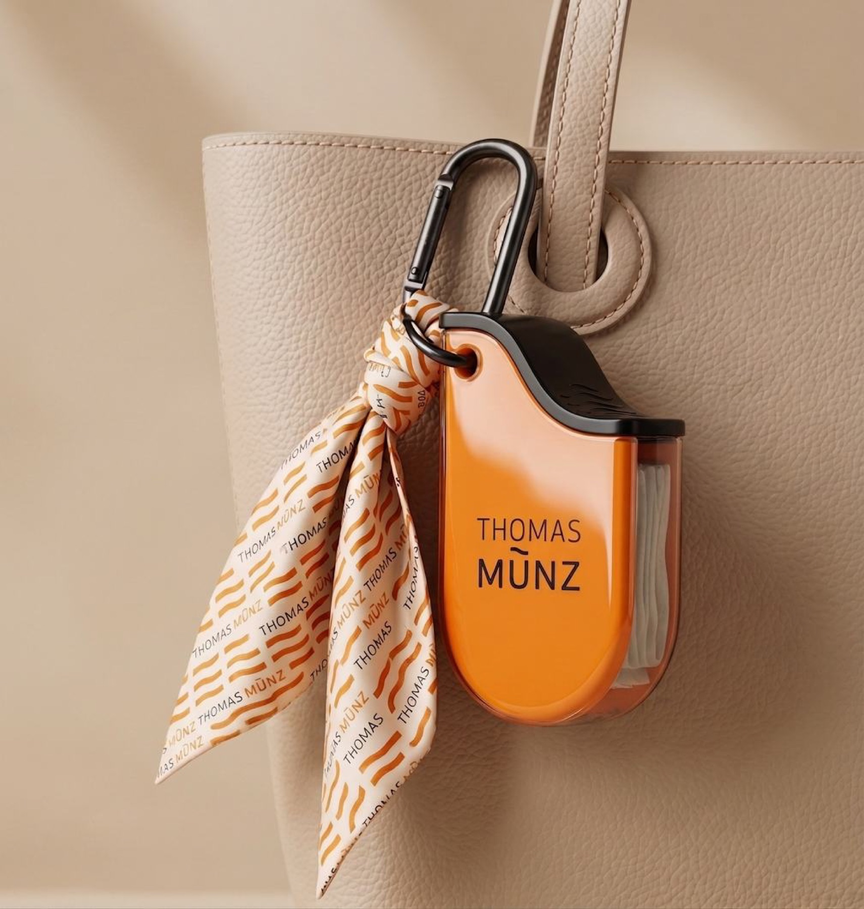
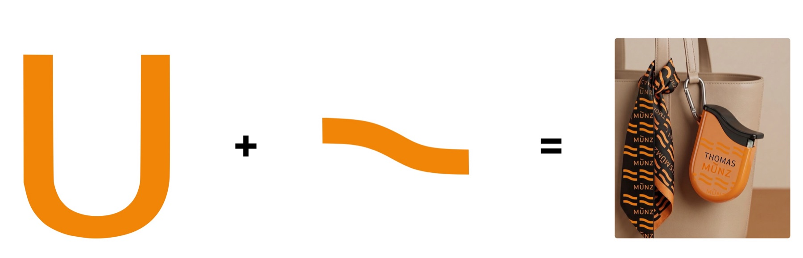
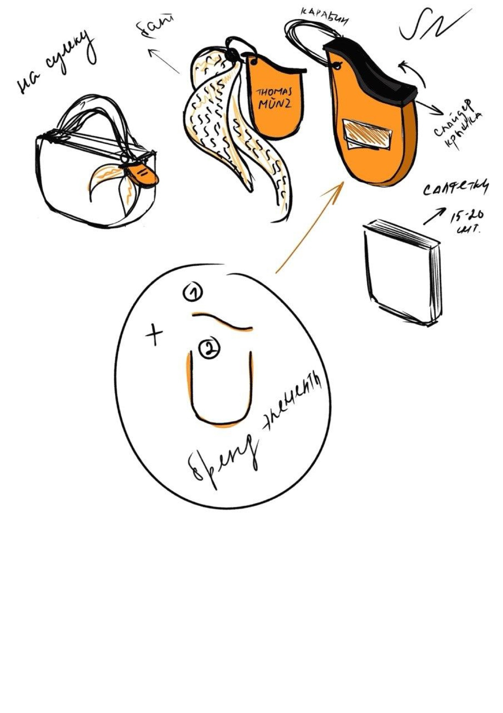
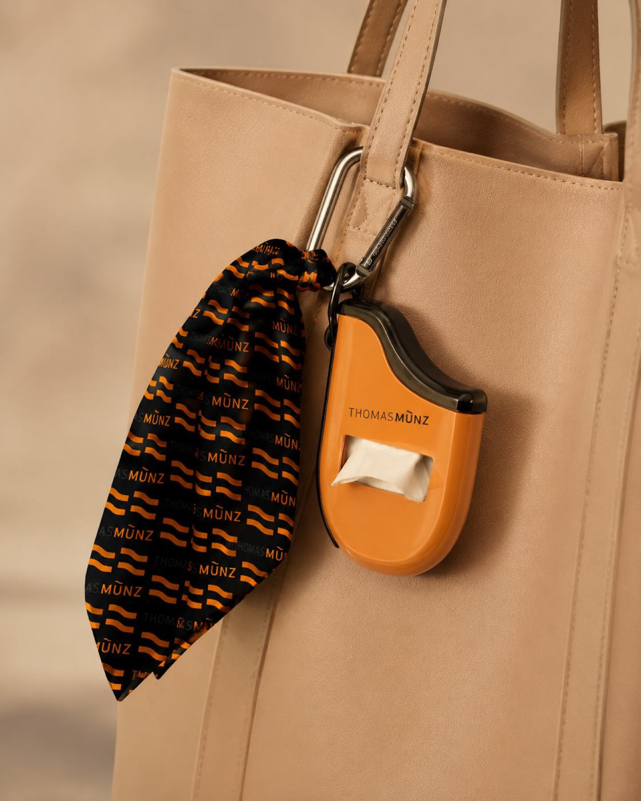
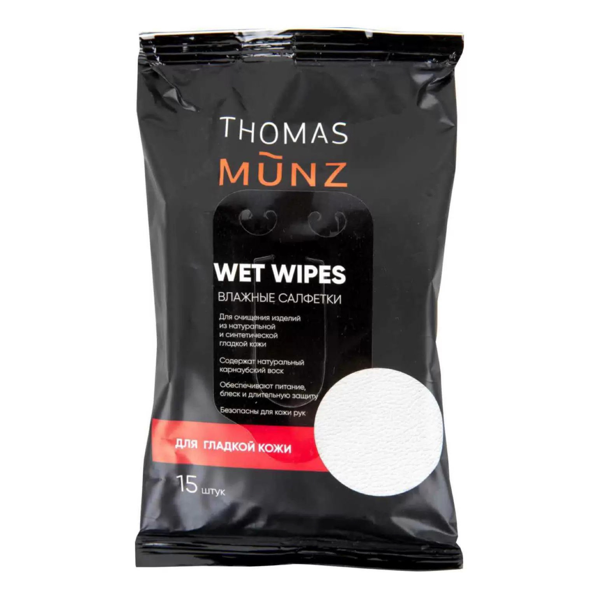

Новая эра аксессуаров
Специальный проект · Креативное продюсирование

О проекте
Thomas Münz выпускает влажные салфетки для ухода за обувью — вещь нужную, но живущую в обычной пачке: салфетки быстро высыхают, упаковка теряется в сумке и забывается. Инициативная концепция переосмысляет этот аксессуар: кейс-подвес в форме буквы U с карабином, фирменным платком и кассетой на 15–20 салфеток, который хочется носить с собой.
Задача
Превратить расходник, о котором забывают сразу после покупки обуви, в носимый аксессуар бренда: сохранить функцию, дать узнаваемую форму и повод показывать её на сумке.
Главный вызов
Стандартная пачка проигрывает дважды. Функционально — салфетки высыхают, потому что упаковка не закрывается плотно. Эмоционально — её прячут в сумку, и бренд исчезает из поля зрения владельца в тот же день.
Бренд





Результат
Кейс перестаёт быть упаковкой и становится частью фирменного стиля: узнаваемый, стильный и всегда под рукой — потому что его хочется носить с собой. Вместо расходника, спрятанного в сумке, бренд получает носитель айдентики, который клиент показывает сам.
Решение
Форма кейса собрана из двух элементов фирменной графики: буквы U — мягкой округлой формы из логотипа Thomas Münz — и волнообразной линии, которая повторяет фирменный знак и превращает крышку из функциональной детали в узнаваемую. Кейс крепится карабином, дополняется платком-твилли с фирменным паттерном и держит 15–20 салфеток. Проработаны две вариации отверстия: с прозрачным слайдером и с выдвижным модулем-кассетой.
Объём работ
- Концепция продукта
- Промышленный дизайн
- Упаковка
- Фирменный стиль
- Бренд-аксессуар